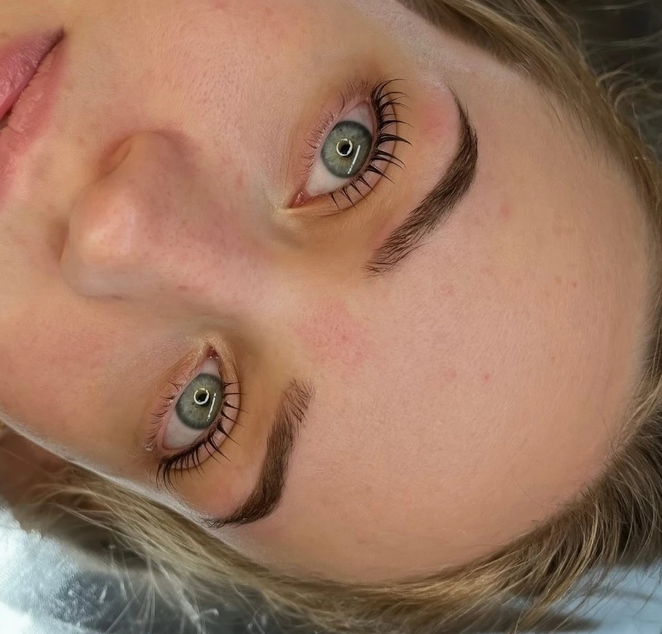

SzempillaKlasszikus vagy koreai szempilla lifting – melyiket válaszd?
Mi a különbség a klasszikus és a koreai szempilla lifting között? Tartósság, hatás a pillákra, kinek ajánlott, előnyök, hátrányok és árak egy helyen.
Elolvasom Spray tan
Spray tanHogyan készülj a spray tanre, és meddig tart a barnaság?
Spray tan felkészülés lépésről lépésre: szőrtelenítés, radírozás, mit ne használj, mikor zuhanyozhatsz, meddig tart a barnaság, és mikor menj esküvő előtt.
Elolvasom